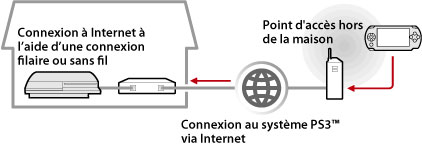
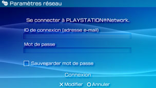

Réseau > Utilisation de la lecture à distance (via Internet)
Utilisation de la lecture à distance (via Internet)
Pour utiliser cette fonctionnalité, vous devrez peut-être mettre à jour le logiciel du système PS3™ et du système PSP™.
A l'aide de votre système PSP™ et d'un point d'accès sans fil (tel que celui mis à votre disposition par le biais d'un service de LAN sans fil (hotspot) commercial), vous pouvez vous connecter via Internet au système PS3™ situé chez vous. Pour utiliser la lecture à distance en déplacement, le système PS3™ doit être configuré en mode veille de connexion de lecture à distance.

Conseil
La méthode d'utilisation d'un service LAN sans fil (hotspot) commercial et les frais associés à ce type d'utilisation dépendent du fournisseur de services. Pour plus de détails, contactez le fournisseur de services.
Préparation (1) (systèmes PS3™ et PSP™)
Lors de votre première utilisation de la lecture à distance, vous devez enregistrer (associer) le système PSP™ auprès du système PS3™. Enregistrez le système sous  (Paramètres) >
(Paramètres) >  (Paramètres de lecture à distance) > [Enregistrer le périphérique].
(Paramètres de lecture à distance) > [Enregistrer le périphérique].
Préparation (2) (système PS3™)
Pour que le système PS3™ passe en mode veille. Vous devez régler [Démarrage à distance] sur [Oui] afin de pouvoir activer le système PS3™ à partir du système PSP™.
1. |
Conformez-vous à la procédure suivante sur le système PS3™ :
|
|---|---|
2. |
Pour mettre le système PS3™ hors tension. |
 (Utilisateurs).
(Utilisateurs). (Eteindre le système) pour mettre le système hors tension et le faire passer en mode veille. Vérifiez que l'indicateur d'alimentation est allumé en rouge.
(Eteindre le système) pour mettre le système hors tension et le faire passer en mode veille. Vérifiez que l'indicateur d'alimentation est allumé en rouge.Conseil
Pour plus de détails sur les paramètres décrits à l'étape 1, consultez la section (Paramètres) > (Paramètres de lecture à distance) > [Démarrage à distance] dans le présent mode d'emploi.
Préparation (3) (système PSP™)
Créez une connexion réseau pour connecter le système PSP™ à un point d'accès. Pour utiliser la lecture à distance via Internet, vous pouvez employer un point d'accès, tel qu'un service LAN sans fil (hotspot) commercial. Pour plus de détails, reportez-vous au mode d'emploi du système PSP™.
Utilisation de la lecture à distance
1. |
Sélectionnez |
|---|---|
2. |
Sélectionnez [Connexion par Internet]. |
3. |
Dans la liste des connexions, sélectionnez celle du point d'accès à utiliser pour la lecture à distance. |
4. |
Entrez l'ID de connexion et le mot de passe PlayStation®Network du compte utilisé sur le système PS3™.  Si la connexion est établie, l'écran du système PS3™ s'affiche sur le système PSP™. |
 (Réseau) >
(Réseau) >  (Lecture à distance) dans le système PSP™.
(Lecture à distance) dans le système PSP™.Quitter la lecture à distance
Appuyez sur la touche PS (touche HOME (accueil)) du système PSP™, puis sélectionnez [Terminer la lecture à distance] > [Fermer et éteindre le système PS3™].
Conseil
Sélectionnez [Fermer sans éteindre le système PS3™] si vous utilisez votre système PS3™ pour copier des fichiers ou encore pour télécharger en tâche de fond ou exécuter d'autres tâches qui exigent que votre système reste sous tension.
Utilisation de la lecture à distance via Internet
Selon le périphérique réseau utilisé, il se peut que vous ne puissiez pas utiliser la lecture à distance via Internet. Dans ce cas, vérifiez les informations suivantes.
- Utilisez [Test connexion Internet] dans
 (Paramètres réseau) sous (Paramètres) pour vérifier que le système PSP™ peut se connecter à Internet et à PlayStation®Network.
(Paramètres réseau) sous (Paramètres) pour vérifier que le système PSP™ peut se connecter à Internet et à PlayStation®Network. - Si le routeur utilisé prend en charge la fonction UPnP, activez-la.
- Si le routeur utilisé ne prend pas en charge UPnP, vous devez définir le transfert de port du routeur afin d'autoriser la communication avec le système PS3™ à partir d'Internet. Le numéro de port utilisé par la lecture à distance est TCP:9293. Pour plus d'informations sur la définition de cette option, consultez le mode d'emploi qui accompagne le routeur.
- Le transfert de port est une fonction permettant de transmettre les signaux qui arrivent à un port particulier (entrée) à un autre port spécifié (sortie). Cela porte également les noms de "mappage de port" ou de "conversion d'adresse".
- Si le système PS3™ est connecté à Internet via plusieurs routeurs, il se peut que la communication ne fonctionne pas correctement.
Conseils
- Un routeur est un périphérique permettant de partager une seule ligne Internet entre plusieurs périphériques.
- Les communications peuvent être limitées selon les fonctions de sécurité proposées par le routeur et le fournisseur de services Internet. Reportez-vous aux instructions fournies avec le périphérique réseau utilisé et aux informations de votre fournisseur de services Internet.